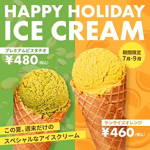

Tanaka Tomoko Portfolio
Works
バナー｜アイスクリームショップの
夏限定フレーバー広告（架空）

- 制作年月
- 2026.03
- 担当範囲
- 構成 / デザイン制作
- 使用ツール
- Illustrator / Photoshop
- 制作期間
- 1週間
アイスをアシンメトリーに配置し、動きのあるレイアウトにすることで、夏のワクワク感を表現しました。
フレーバーごとに背景色を変え、商品の違いが直感的に伝わるよう設計。
また、太めのゴシック体で統一し、SNS上でも視認性の高いデザインを意識しました。
